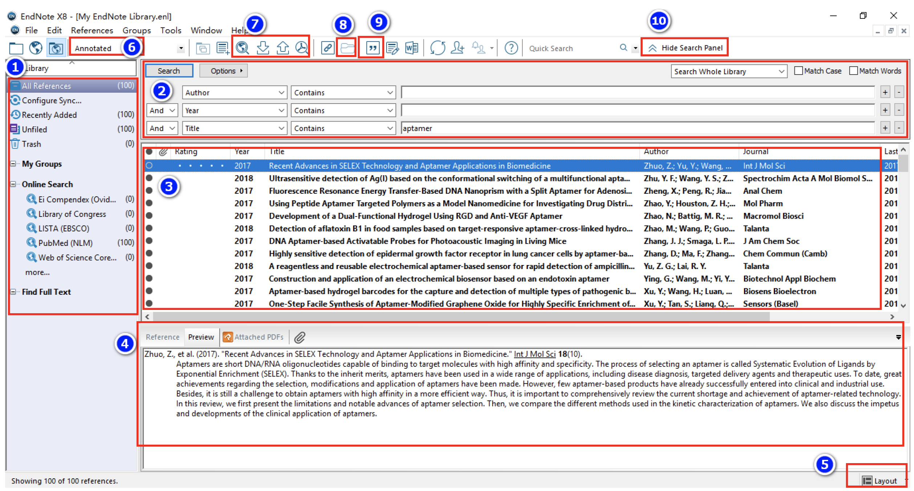

Endnote 界面介绍 |
|
|
|
「十大板块」 ①为导航区域，包括所有文献记录、同步状态、最近添加记录、未分类记录、回收站、个人分组、在线搜索常用数据库、查找全文； ②为在线搜索面板，包括作者、年限、标题等限定检索项，可以使用逻辑关系联合多关键词进行检索，点击工具栏上的图标⑩可隐藏搜索面板； ③为参考文献记录条目显示区，包括文献是否已读状态标识（状态标识为实心圆，标题加粗表示文献未读；状态标识为空心圆，标题未加粗表示文献已读）、文献的星标重要程度、文献 发表年限、文献标题、作者、期刊名、文献类别等，点击栏目名可以进行排序、拖动等操作； ④参考文献记录条目详细预览窗口，包括Reference——文献具体信息；Preview——文献预览窗口，其显示格式与工具栏上的图标⑥有关；Attached PDFs——已经下载的文献全 文，如有则可进行全文阅读和注释；“回形针”图标——添加附件； ⑤界面布局按钮，可进行界面重新布局； ⑥设置参考文献显示类型，如按照Nature或Science期刊格式显示； ⑦包括四个常用快捷工具按钮，第一个为在线搜索常用数据库选择；第二 个为从文件中导入参考文献到文献数据库中；第三个为从文献数据库中导出参考文献；第四个为查找全文； ⑧打开全文，这里是调用外部pdf阅读器进行阅读，如需使用EndNote X9内置阅读器，点击区域④的“Attached PDFs”即可。注意，这两种阅读模式，文献必须是已经下载了全文， 没有全文不能打开查看； ⑨将选中的文献记录按照设定的文献格式插入Word中光标所处位置； ⑩隐藏搜索面板快捷按钮。 |
| BFSU_Linlan Li | |